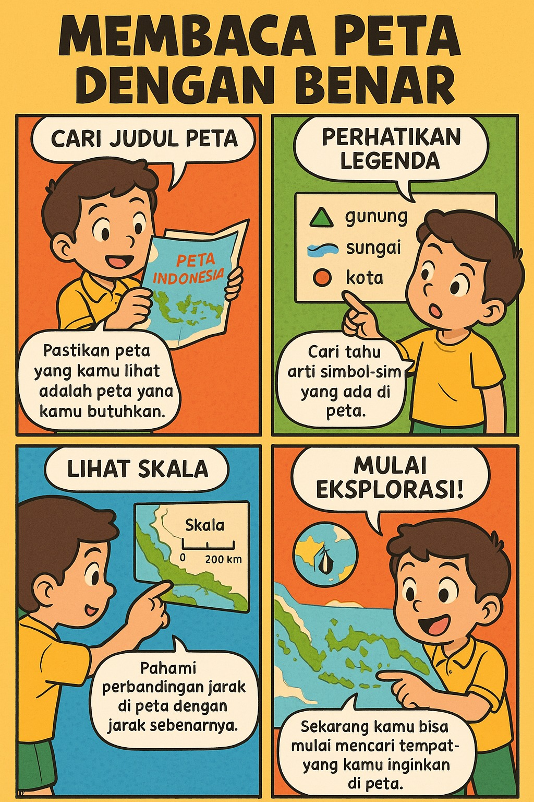
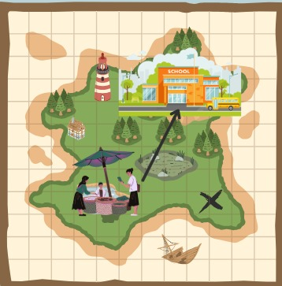

Pengembangan Media dan Sumber Belajar Abad Ke 21 di SD
Dosen Pengampu: Dr. Dede Trie Kurniawan, S.Si., M.Pd
Universitas Pendidikan Indonesia Kampus Cibiru Kris Nurnaningsih_2C_2432659
Selamat Datang di Buku Peta Digital
Sebelum memulai, silakan masukkan nama Anda:
Petualangan Menjelajah Peta
Buku Digital untuk Siswa Kelas 4 SD
Apa Itu Peta?
Video 1: Penjelasan peta beserta Fungsinya
Fakta Seru: Peta tertua yang ditemukan berasal dari Babilonia sekitar 2.500 tahun sebelum Masehi dan digambar di atas tanah liat!
Jenis-Jenis Peta
Ada berbagai macam peta yang digunakan untuk keperluan berbeda. Mari kita kenali beberapa jenis peta:
1. Peta Dunia
Menunjukkan seluruh permukaan bumi dengan benua dan samudera.
2. Peta Negara Indonesia
Menunjukkan wilayah suatu negara beserta provinsi atau negara bagiannya.
3. Peta Kota
Menunjukkan detail suatu kota dengan jalan, bangunan penting, dan fasilitas umum.
Aktivitas: Coba sebutkan 3 tempat yang biasanya ada di peta kota! (Contoh: sekolah, rumah sakit, taman)
Bagian-Bagian Peta
Setiap peta memiliki bagian-bagian penting yang perlu kita ketahui:
Gambar 2: Bagian-bagian penting dalam peta
Judul Peta: Menunjukkan isi atau tema peta
Legenda: Penjelasan simbol-simbol yang digunakan dalam peta
Skala: Perbandingan jarak di peta dengan jarak sebenarnya
Orientasi: Biasanya berupa tanda panah yang menunjukkan arah utara
Inset: Peta kecil yang menunjukkan lokasi peta utama pada area yang lebih luas
Fakta Seru: Tahukah kamu? Skala peta bisa bermacam-macam. Peta dengan skala 1:10.000 berarti 1 cm di peta sama dengan 10.000 cm (100 meter) di dunia nyata!
Simbol-Simbol dalam Peta
Peta menggunakan berbagai simbol untuk mewakili objek di dunia nyata. Berikut beberapa contoh simbol umum:
Simbol
Artinya
🟦
Perairan (sungai, danau, laut)
🟫
Pegunungan atau dataran tinggi
🟩
Hutan atau daerah hijau
✖
Rumah sakit
🏫
Sekolah
Aktivitas: Coba buat 3 simbolmu sendiri untuk mewakili tempat favoritmu (misalnya: toko es krim, taman bermain, perpustakaan)!
Membaca Peta Dengan Benar

Gambar 3: Membaca Peta Dengan Benar
Kuis Membaca Arah Peta
Pertanyaan:
Perhatikan peta di samping! Arah mana yang kamu tuju dari pasar ke sekolah?

Fakta Seru: Arah mata angin sebenarnya ada 16, bukan hanya 8! Ada arah seperti Utara Timur Laut (UTL) dan Timur Menenggara (TMT).
Jawaban
Gambar 8: Jawaban
Mari Bermain dengan Peta Digital!
Sekarang kita akan mencoba menggunakan peta digital untuk melihat lokasi kita saat ini di Bumi!
Petunjuk:
Klik tombol "Mari Bermain" di bawah
Izinkan browser untuk mengakses lokasi Anda
Google Maps 3D akan terbuka di tab baru
Anda akan melihat lokasi Anda saat ini di peta!
Klik tombol di atas untuk memulai petualangan peta!
Aktivitas: Mari coba bermain, cari pasar dan coba arahkan menuju sekolah!
Peta Digital
Di zaman modern ini, kita juga bisa menggunakan peta digital seperti Google Maps atau Waze.
Keuntungan peta digital:
Bisa menunjukkan lokasi kita secara real-time
Bisa memberikan petunjuk jalan langkah demi langkah
Bisa memperbarui informasi secara otomatis
Bisa melihat foto tempat sebelum mengunjunginya
Fakta Seru: Peta digital pertama dikembangkan pada tahun 1960-an oleh pemerintah Kanada! Sekarang kita bisa mengakses peta seluruh dunia hanya dengan smartphone.
Evaluasi Petualangan Peta
Mari uji pengetahuanmu dengan game seru ini!
Skor: 0
Level: 1/5
Petualangan Evaluasi Peta
Jawab pertanyaan dengan benar untuk mendapatkan poin!